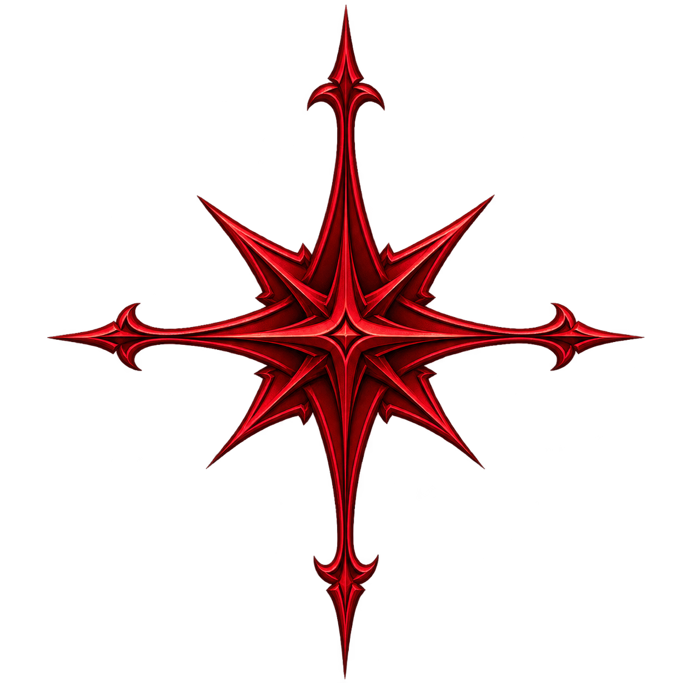
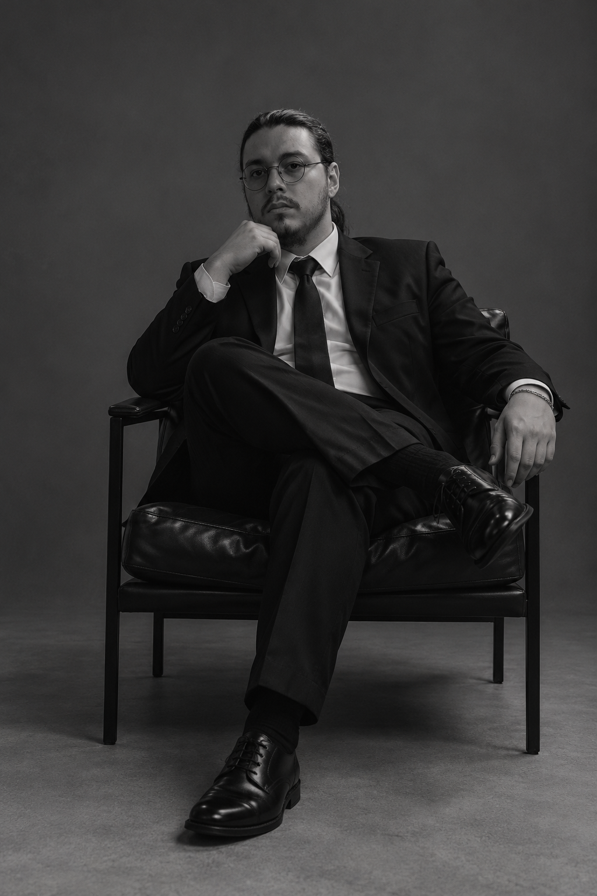

01 — Sobre mim

Prazer, sou
Marcos Vinicius
Designer em formação, apaixonado pela comunicação visual e pela liberdade de criação.
Tenho interesse em tipografia, identidade visual e composições que transmitem personalidade.
Foco em projetos de comunicação visual, explorando tipografia, composição e experimentação gráfica.

IDEIAS GANHAM FORMA ATRAVÉS DO DESIGN.
M. V.